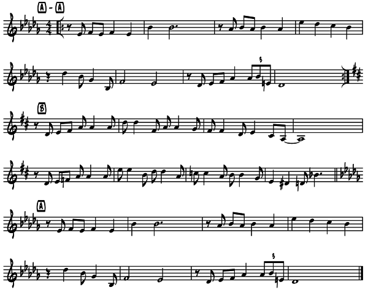

In their 1935 recording of Johnny Green’s “Body and Soul,” Wilson again takes the spotlight. The song is a 32-bar A A B A form. The A sections are in the key of D major, while the B section is in the key of Db major. In the first chorus Goodman plays the A sections with Wilson in the B section. Things are reversed in the 2nd chorus, with Wilson playing the A sections and Goodman the B section.

Follow the chart below as you listen to The Benny Goodman Trio’s “Body and Soul (1935).
1st chorus
0:00-0:21 A Goodman plays the melody.
0:21-0:41 A
0:41-1:01 B Wilson plays melody on piano with embellishments.
1:01-1:21 A Goodman returns playing the melody.
2nd chorus
1:21-2:01 A A Wilson solo in piano. Notice the stride inspired left hand comping and the contrasting, flowing right hand solo lines.
2:01-2:21 B Goodman plays melody of the bridge with embellishments.
2:21-2:41 A Wilson returns on piano solo.
Close
2:41-3:01 B Goodman plays melody of the bridge (B section)
3:01 to end A Goodman plays melody and slowing to end